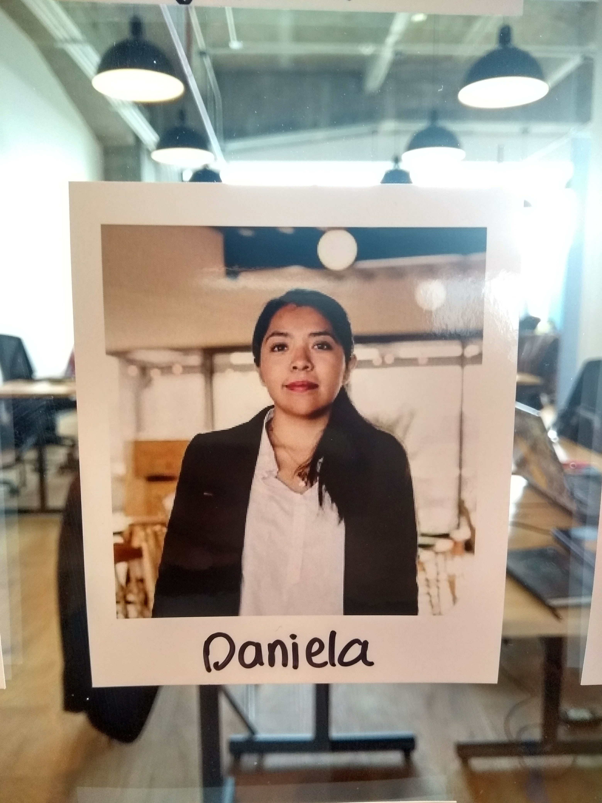

Perfil
Product Designer con más de 7 años de experiencia creando productos digitales.
Daniela Serrano
Product Designer enfocada en pensamiento sistémico y producto end-to-end. Creo en el diseño como herramienta estratégica para conectar negocio, usuarios y tecnología.
Especialidades
Habilidades

Experiencia
Product Designer / Scrum Master
AXA Seguros · CDMX
Diseño de productos digitales para el sector asegurador, liderando equipos multidisciplinarios y facilitando ceremonias Scrum para asegurar la entrega continua de valor.
Product Designer / UX Lead
AXA Seguros · CDMX
Liderazgo de diseño UX en iniciativas estratégicas, definición de visión de producto y coordinación de research con stakeholders para alinear negocio, tecnología y usuarios.
Project Manager / Product Designer
AXA Seguros · CDMX
Gestión de proyectos de diseño end-to-end, priorización de backlog y coordinación entre equipos de desarrollo, negocio y diseño para entregas iterativas.
UX Designer
AXA Seguros · CDMX
Diseño de interfaces y experiencia de usuario para plataformas digitales del sector asegurador, ejecutando investigación, prototipado y pruebas de usabilidad.